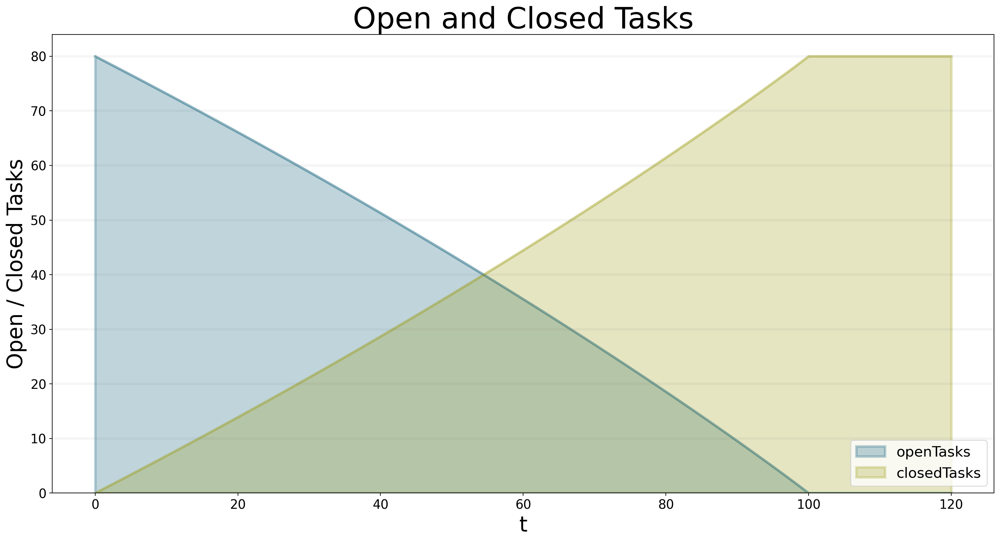

from BPTK_Py.bptk import bptk
bptk = bptk()
bptk.plot_scenarios(
scenario_managers=["smSimpleProjectManagement"],
scenarios=["scenario80"],
equations=['openTasks',"closedTasks"],
title="Open and Closed Tasks",
x_label="t",
y_label="Open / Closed Tasks",
){'closedTasks': <function simulation_model.__init__.<locals>.<lambda> at 0x000002256FBED430>, 'openTasks': <function simulation_model.__init__.<locals>.<lambda> at 0x000002256FBED700>, 'staff': <function simulation_model.__init__.<locals>.<lambda> at 0x000002256FBED790>, 'completionRate': <function simulation_model.__init__.<locals>.<lambda> at 0x000002256FBED820>, 'currentDate': <function simulation_model.__init__.<locals>.<lambda> at 0x000002256FBED8B0>, 'deadline': <function SdSimulation.change_equation.<locals>.<lambda> at 0x000002256FBD9040>, 'effortPerTask': <function SdSimulation.change_equation.<locals>.<lambda> at 0x000002256FBD5F70>, 'initialOpenTasks': <function SdSimulation.change_equation.<locals>.<lambda> at 0x000002256FBD5AF0>, 'initialStaff': <function SdSimulation.change_equation.<locals>.<lambda> at 0x000002256FBD5EE0>, 'remainingTime': <function simulation_model.__init__.<locals>.<lambda> at 0x000002256FBEDB80>, 'schedulePressure': <function simulation_model.__init__.<locals>.<lambda> at 0x000002256FBEDC10>, 'productivity': <function simulation_model.__init__.<locals>.<lambda> at 0x000002256FBEDCA0>}